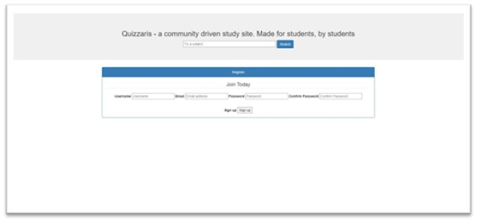

Outcomes to date
The outcomes for our project include 5 features.
1. Doing quizzes
2. Adding questions and answers
3. Score display
4. Solution discussion
5. Rating system.
Doing quizzes would require being able to access the site and the existing quizzes, selecting from pre-existing
options, progress through the quiz and finish. Adding questions required being able to save quiz questions and answers, displaying the quizzes and matching questions to solutions. Score display would show the user their score and display
graphs on what percentage of questions in an area they answered correctly. Solution discussion involves listing and editing comments, being able to reply to comments, viewing comments and matching comments to solutions/quizzes. Rating
system would require listing rating, aggregating ratings and allowing certain users to rate Due to changes throughout the project, score and discussion features were moved to extended features and replaced by login and profile.
3.1
Login requires saving user details and restricting access to certain areas based on login status.
4.1 Profile allows users to edit their profile information and details.
We will be able to demonstrate 4 out of the 5 features: doing
quizzes, adding questions and solutions, login and profile. Whilst these features are demonstrable, there are facets to these that are incomplete or subpar in functionality. Feature 1 does not always progress through the quiz questions
when attempting to do the quiz and has some visual display issues. Feature 4.1 currently has limited areas users can edit. Feature 2 and 3 have full functionality. We expected to be able to implement a simple rating system of sorts but
due to complexities with feature 1 and 2, there was little time to focus on implementing feature 5. In addition, the tools and technology used for these features were unfamiliar to most of our members which posed an added difficulty in
realising the features. In addition, feature 1 relies on a well formatted interface to implement, making it hard to check for full functionality.
Screenshots

Outcomes to date

Extended viable features
Extended feature 1
Extended feature 2
Extended feature 3